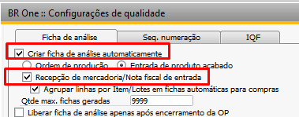
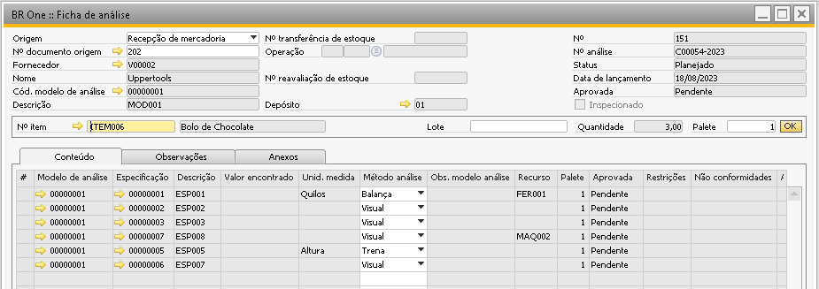
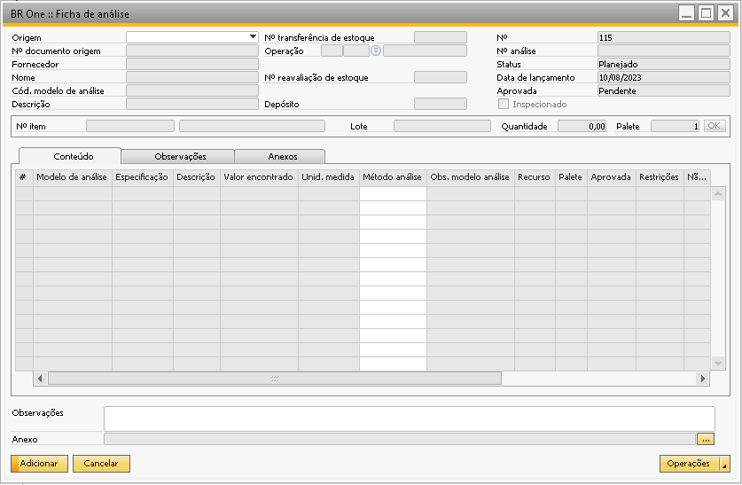
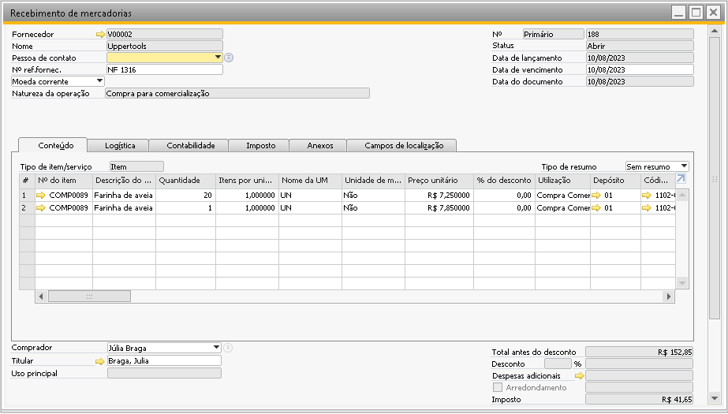

Origem - Recepção de mercadoria
Quando a origem for ‘Recepção de mercadoria’, será possível criar uma ficha de análise para o item que esteja vinculada ao recebimento de mercadorias.
No campo ‘Nº documento de origem’, serão exibidos os recebimentos que possuam um ou mais itens que tenham algum modelo de análise vinculado.
{kind=link}
Após selecionar o documento de origem é preciso também escolher qual item será analisado no campo ‘Nº do item’, só serão listados os itens que possuam modelo de análise vinculado.
Como no exemplo abaixo, é possível notar que na ficha de análise aparecerá apenas o item Ovo para a seleção, mesmo o recebimento tendo mais itens, isso porque o item ovo é o único item vinculado a um modelo de análise.
{kind=link}
O campo ‘Depósito’ será carregado automaticamente após carregar o ‘Nº do item’, ele é recuperado das linhas do documento de origem.
Caso haja mais de uma linha no documento com o mesmo item, o mesmo depósito e atribuído o mesmo lote (caso seja um item administrado por lote), após selecionar o item e o lote a quantidade será agrupada (somada) e será utilizada no campo ‘Quantidade’.

Com a simulação abaixo, é possível notar que ao selecionar o lote do documento, o sistema define a quantidade 21.
{kind=link}